Практическая работа 1 · 90 минут
Установка Ubuntu
в VirtualBox
От правильного файла до первого рабочего стола: два маршрута для хоста — Windows и macOS — и одна безопасная виртуальная машина.
Финиш сначала
Через 90 минут у вас работает отдельный компьютер внутри компьютера
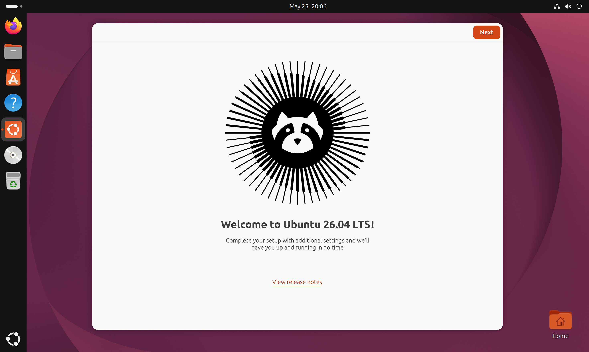
- ХОСТ НЕ ТРОГАЕМWindows или macOS остаётся основной системой.
- ГОСТЬ ИЗОЛИРОВАНUbuntu получает свой виртуальный диск и память.
- МОЖНО ОТКАТИТЬСнимок возвращает чистое состояние после эксперимента.
Модель · четыре объекта
Не путайте программу, образ и установленную систему
Физический компьютер и его основная ОС.
Выделяет гостю CPU, RAM, диск, сеть и экран.
ISO запускает установщик. После установки система живёт на VDI-диске.
Стоп-проверка · до скачивания
Архитектуры должны совпасть
Ubuntu Desktop ISO с суффиксом amd64.
Ubuntu Desktop ISO с суффиксом arm64.
ubuntu-…-desktop-amd64.iso не подходит для Apple Silicon.Перед началом · 3 минуты
Проверьте хост, свободное место и два файла
macOS: «Об этом Mac»
Ищем x64/Intel или Apple M‑series.
25 ГБ уйдёт виртуальному диску, остальное — ISO и запас.
ISO не распаковываем и не переименовываем.
Шаг 1 · официальный сайт
Откройте страницу загрузки VirtualBox
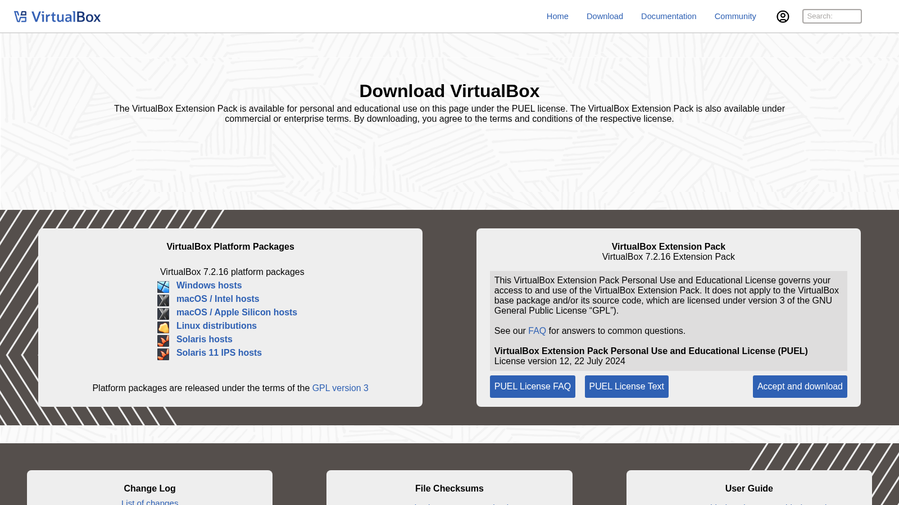
- WINDOWS HOSTSДля Windows 10/11 x64.
- MACOS / INTELТолько для Mac на процессоре Intel.
- MACOS / APPLE SILICONДля Mac с M1, M2, M3 или M4.
- EXTENSION PACKДля первой работы не обязателен.
Маршрут A · Windows
Скачайте Windows hosts и запустите установщик
- Откройте скачанный файл
.exeЕсли Windows спросит разрешение на изменения — выберите «Да».
- Нажмите Next и оставьте компоненты по умолчанию
Программа, USB, сеть и ярлыки устанавливаются вместе.
- Подтвердите установку сетевых драйверов
Сеть может кратко отключиться: VirtualBox добавляет виртуальные адаптеры.
- Нажмите Install → Finish
После завершения откроется VirtualBox Manager.
Windows · экран Custom Setup
На этом шаге установщик спрашивает, какие части VirtualBox поставить
| Пункт на экране | За что отвечает | Что выбрать |
|---|---|---|
| VirtualBox Application | Главное окно, настройки и запуск виртуальных машин | Оставить обязательно |
| USB Support | Позволяет подключать USB-устройства к гостевой системе | Оставить включённым |
| Networking | Создаёт виртуальный сетевой адаптер и режим NAT | Оставить включённым |
| Python Support | Нужен для управления VirtualBox программным кодом | Не важен для этой работы |
.exe и до кнопки Install. Ничего не отключайте; краткий разрыв сети во время установки драйвера — нормален.Маршрут B · macOS
Сначала выберите пакет под процессор Mac
Скачиваем macOS / Apple Silicon hosts. Ubuntu — arm64.
Скачиваем macOS / Intel hosts. Ubuntu — amd64.
macOS · от загрузки до первого запуска
DMG открывает установочный диск, а файл PKG устанавливает программу
- В Finder откройте Downloads и дважды нажмите файл
.dmgDMG не устанавливает программу: он подключает временный диск и открывает окно VirtualBox.
- В открывшемся окне запустите
VirtualBox.pkgПоявится системный Installer macOS. Нажмите Continue → Install и подтвердите действие паролем или Touch ID.
- Если установка заблокирована, откройте Privacy & Security
System Settings → Privacy & Security → Allow. Затем снова запустите пакет; при запросе перезагрузите Mac.
- После сообщения об успешной установке откройте Applications → VirtualBox
Теперь DMG можно извлечь. При первом запуске разрешите программе доступ к сети и нужным папкам.
macOS · граница платформы
Apple Silicon — это не «тот же Intel, только быстрее»
Ubuntu ARM64 и другие AArch64-образы.
VirtualBox не эмулирует другой набор инструкций.
Часть функций ARM-хоста может отличаться от x86.
Контрольная точка 1 · VirtualBox установлен
До создания VM убедитесь, что программа готова к работе
| Что проверяем | Где посмотреть | Ожидаемый результат |
|---|---|---|
| Запуск VirtualBox Manager | Windows: меню Start; macOS: Applications | Главное окно открывается без системного сообщения об ошибке |
| Версия программы | Help → About VirtualBox | Используется актуальная версия ветки VirtualBox 7 для архитектуры хоста |
| Рабочая область слева | Список виртуальных машин | Пустой список допустим: новая VM ещё не создана |
| Свободное место на хосте | Проводник Windows или Finder | Для ISO, VDI и временных файлов доступно не менее 35–40 ГБ |
Шаг 2 · команда в главном окне
В верхней панели VirtualBox Manager нажмите New / Создать
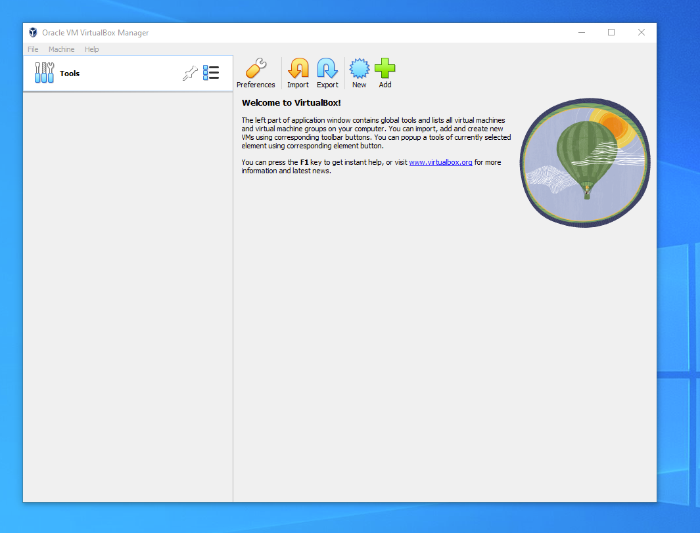
- ГДЕ НАХОДИТСЯ КНОПКАВ верхней панели найдите синюю кнопку со значком звезды и подписью
New. В русской локализации она называется «Создать». - ПОЧЕМУ ВЫБИРАЕМ NEWКоманда запускает мастер, который создаст конфигурацию VM и новый виртуальный диск для Ubuntu.
- ДЛЯ ЧЕГО НУЖНА ADD
Add / Добавитьрегистрирует уже существующую машину по файлу.vbox. У нас такого файла нет, поэтому эту кнопку не используем. - ЧТО ПРОИЗОЙДЁТ ДАЛЬШЕПосле нажатия New откроется отдельное окно
Create Virtual Machine, показанное на следующем слайде.
Шаг 2 · первый экран мастера
Укажите имя VM, каталог хранения и установочный ISO-образ
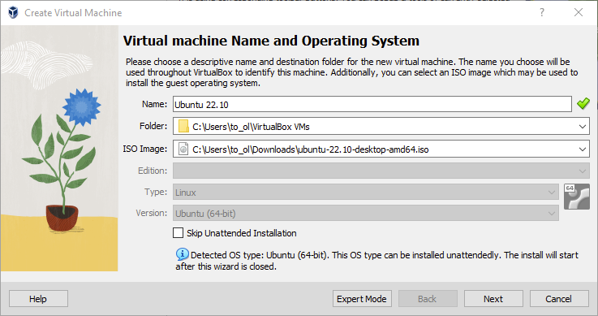
- NAME — ИМЯ В СПИСКЕ VIRTUALBOXВведите
Ubuntu-lab-01. Это только название виртуальной машины в Manager; имя пользователя Ubuntu задаётся позднее внутри установщика. - FOLDER — КАТАЛОГ ФАЙЛОВ VMЗдесь будут храниться конфигурация
.vboxи растущий виртуальный диск.vdi. Выберите локальный каталог с запасом свободного места, не облачную папку. - ISO IMAGE — УСТАНОВОЧНЫЙ НОСИТЕЛЬУкажите скачанный файл
.iso, не распаковывая его. Для Windows x64 и Intel Mac нуженamd64; для Apple Silicon —arm64. - TYPE И VERSION — РЕЗУЛЬТАТ РАСПОЗНАВАНИЯПосле выбора ISO VirtualBox должен определить Linux и Ubuntu соответствующей архитектуры. Если показана другая система, остановитесь и проверьте выбранный файл.
Шаг 2 · сопоставление версий VirtualBox
Автоматическая установка: новый и пошаговый интерфейс
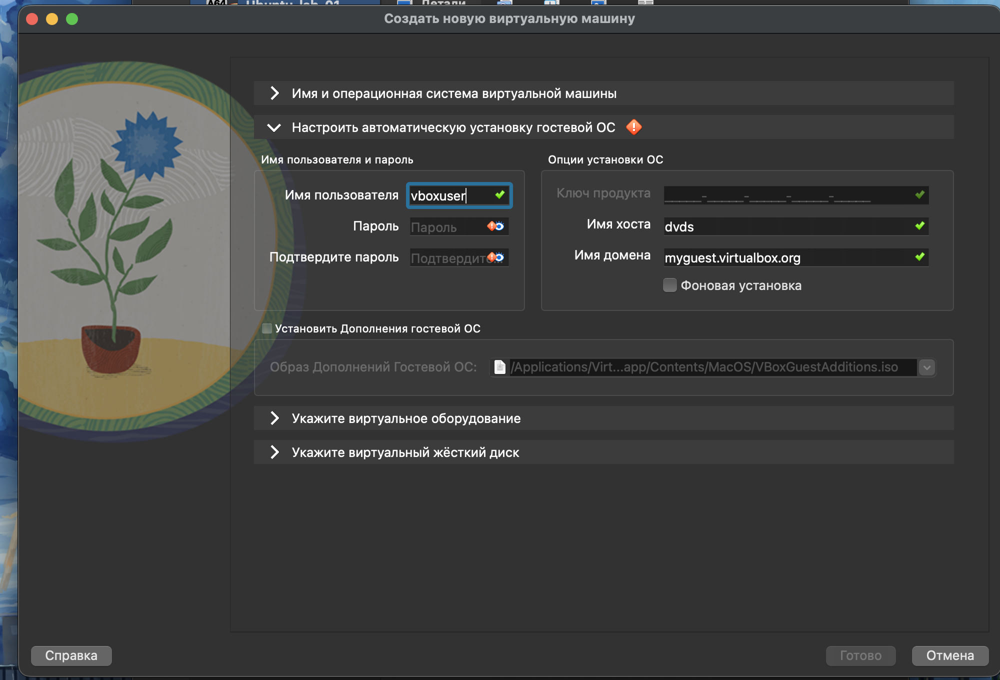
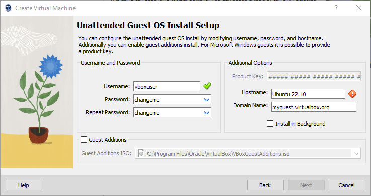
В обеих версиях задаются логин, пароль, имя хоста и домен. Ключ продукта для Ubuntu не используется.
В новом окне этапы раскрываются вертикально. В пошаговом мастере каждый этап открывается на отдельной странице.
Старый мастер: нажмите Back и включите Skip Unattended Installation. VirtualBox 7.2: после выбора ISO раскройте раздел «Имя и операционная система виртуальной машины» и снимите флажок «Осуществить установку автоматически».
Шаг 3 · RAM и CPU
Выделяем ресурсы, не обкрадывая хост
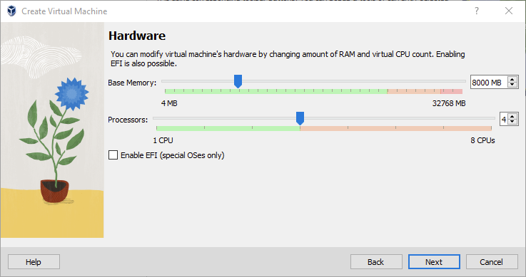
- BASE MEMORY4 ГБ минимум для учебной VM; 6 ГБ комфортнее.
- PROCESSORS2 ядра достаточно для установки и терминала.
- ЗЕЛЁНАЯ ЗОНАНе выходите за неё: хост тоже должен работать.
Рекомендуемый профиль
Настройки зависят от возможностей хоста
При 8 ГБ на хосте отдаём гостю 4; при 16 ГБ — 6.
Не выделяем больше половины логических ядер.
Контроллер VMSVGA; 3D включаем только после стабильного запуска.
Шаг 4 · виртуальный диск
Создаём новый диск размером 30 ГБ
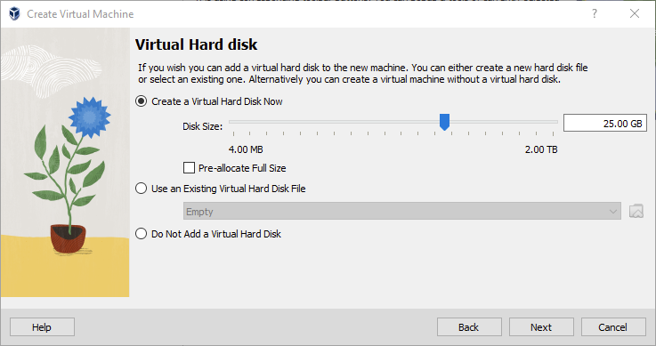
- CREATE NOWНовый чистый диск для Ubuntu.
- 30 GBМинимум курса; официальный минимум Ubuntu Desktop — 25 ГБ.
- DYNAMICФайл растёт по мере заполнения, но лимит остаётся 30 ГБ.
Что такое VDI
Виртуальный диск — обычный файл на диске хоста
Хранит виртуальные разделы, файлы и загрузчик Ubuntu.
Лимит 30 ГБ не означает, что файл сразу займёт 30 ГБ.
Предсказуемее по производительности, но дольше создаётся.
.vdi равносильно удалению диска компьютера. Не переносите его при запущенной VM.Контрольная точка 2 · Summary
Перед созданием проверяем пять строк
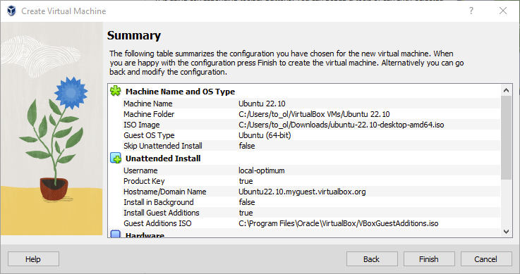
- TYPEUbuntu / Linux.
- ISOФайл выбран и архитектура совпадает.
- MEMORY4–6 ГБ.
- PROCESSORS2.
- DISKVDI, dynamic, 30 ГБ.
После создания VM · до первого запуска
Где открыть и проверить настройки виртуальной машины
- Полностью выключите VM и выберите её в списке
В Ubuntu выполните «Завершить работу», дождитесь состояния
Выключена / Powered Off. В VirtualBox Manager выделитеUbuntu-lab-01и нажмите верхнюю кнопкуНастроить / Settings. При запущенной или сохранённой VM часть полей заблокирована. - Откройте «Дисплей → Экран»
Установите
VMSVGAи128 МБвидеопамяти. Для первого запуска снимите флажок «Включить 3D-ускорение»; вернуть его можно после устойчивой загрузки рабочего стола. - Откройте «Сеть → Адаптер 1»
Включите сетевой адаптер, выберите тип подключения
NATи раскройте «Дополнительно»: флажок «Кабель подключён» должен быть установлен. - Проверьте «Носители» и «Система → Материнская плата»
В «Носителях» выберите оптический привод и подключите Ubuntu ISO через значок диска. В порядке загрузки поставьте
Оптический дискпередЖёстким диском, нажмитеОКи только затем запускайте VM.
Шаг 5 · запуск
В меню GRUB выберите Try or Install Ubuntu
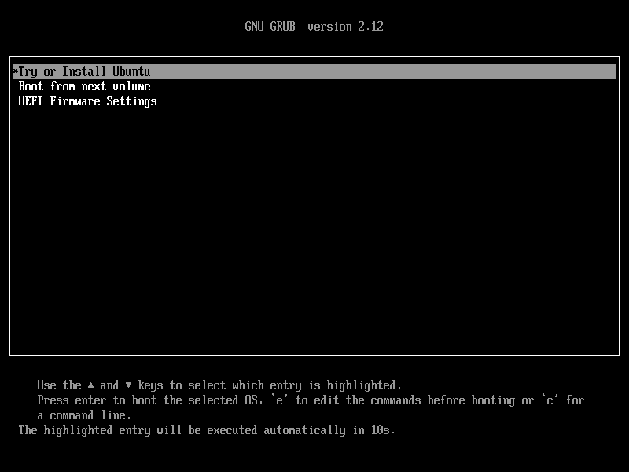
- ПЕРВАЯ СТРОКАЗапускает live-среду и установщик Ubuntu.
- ENTER ИЛИ 10 СЕКУНДМожно подтвердить выбор либо дождаться автозапуска.
- BOOT FROM NEXT VOLUMEПосле установки загружает виртуальный диск.
- ЧЁРНЫЙ ЭКРАНПодождите 1–3 минуты: первый запуск с ISO не мгновенный.
Если вместо установщика — ошибка
Диагностика первого запуска: где искать и что исправлять
| Симптом | Где проверить | Исправление | Как понять, что помогло |
|---|---|---|---|
No bootable medium | Выключенная VM → Настроить → Носители; затем Система → Порядок загрузки. | Выберите оптический привод → значок диска → «Выбрать файл диска» → Ubuntu ISO. Поставьте оптический диск первым. | После запуска появляется меню ISO или логотип Ubuntu, а не сообщение BIOS. |
| Сообщение о неподдерживаемой архитектуре | macOS: → Об этом Mac → Чип. Windows: Параметры → Система → О системе → Тип системы. Сравните с именем ISO. | Apple Silicon требует arm64; обычный Intel/AMD-компьютер — amd64. Скачайте правильный ISO и повторно подключите его в «Носителях». | VirtualBox определяет Ubuntu нужной разрядности, ISO начинает загружаться. |
| Чёрный или белый экран | Настроить → Дисплей → Экран. VM должна быть полностью выключена, а не сохранена. | Выберите VMSVGA, 128 МБ видеопамяти и временно отключите 3D. Запустите VM заново, не восстанавливая сохранённое состояние. | Появляется меню загрузки, Live Desktop или окно установщика без артефактов. |
| VM зависает вместе с хостом | Настроить → Система и монитор ресурсов macOS/Windows. | Оставьте 2 CPU и 4–6 ГБ RAM, не более половины ресурсов хоста. Закройте тяжёлые программы и выполните холодный запуск. | Хост реагирует на ввод, индикатор диска VM меняется, установка продолжает работу. |
Ubuntu · язык
Выберите язык установщика
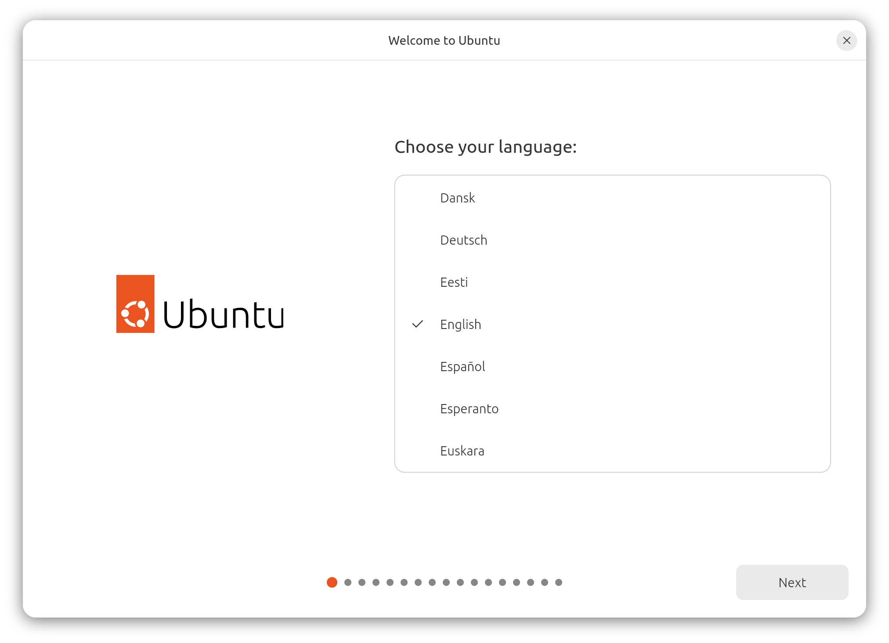
- РУССКИЙ ИЛИ ENGLISHЯзык интерфейса можно сменить позже.
- ДЛЯ ЛАБОРАТОРИИРусский упрощает шаги; English удобнее для поиска ошибок.
- NEXTПереходим к доступности и клавиатуре.
Ubuntu · клавиатура
Проверьте раскладку до создания пользователя
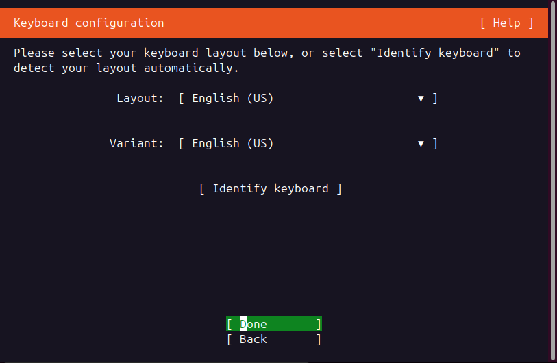
- ОСНОВНАЯДля команд удобно начать с English (US).
- РУССКАЯ РАСКЛАДКАЕё можно добавить после установки в Settings.
- ПРОВЕРКАУбедитесь, что доступны символы
@ / - _.
Ubuntu · сеть
Как настроить NAT и проверить получение адреса
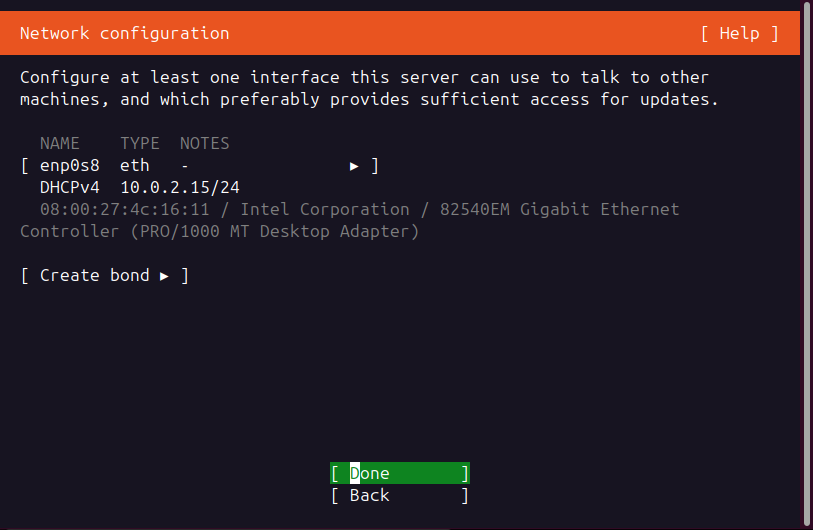
- До запуска откройте настройки адаптера
VirtualBox Manager → выключенная VM →
Настроить → Сеть → Адаптер 1. Включите адаптер, выберитеNATи установите «Кабель подключён». - На экране Network configuration найдите интерфейс
Строка
enp0s8— виртуальная сетевая карта. Адрес видаDHCPv4 10.0.2.15/24означает, что DHCP VirtualBox уже выдал настройки. - Если адрес получен — продолжайте
Клавишей
Tabперейдите наDoneи нажмитеEnter. Ручной IP, шлюз и DNS в режиме NAT не вводятся. - Если строки DHCPv4 нет
Вернитесь назад, выключите VM и повторно проверьте «Кабель подключён». После установки выполните
ip -br a, затемping -c 3 1.1.1.1иping -c 3 ubuntu.com.
Ubuntu · режим запуска
Выберите Install Ubuntu

- TRY UBUNTUЗапуск без установки, изменения после выключения пропадут.
- INSTALL UBUNTUЗаписывает систему на виртуальный диск VDI.
- НАША ЦЕЛЬВыбираем установку.
Ubuntu · состав системы
Как выбрать полный Ubuntu Desktop в текстовом установщике
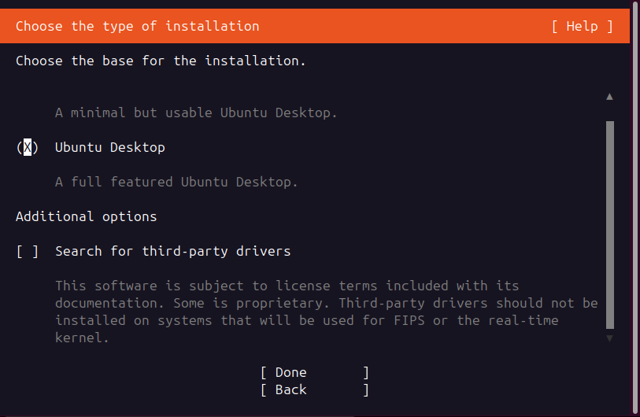
- Передайте клавиатуру окну VM
Щёлкните внутри окна VirtualBox. В Subiquity перемещение выполняется стрелками, выбор —
Space, переход между областями —Tab, подтверждение —Enter. - Выделите строку Ubuntu Desktop
Стрелками перейдите на
Ubuntu Desktopи нажмитеSpace. Маркер(X)подтверждает выбор полного графического рабочего стола. - Не выбирайте минимальный вариант для курса
Minimal устанавливает рабочую систему без части стандартных приложений. Это усложнит последующие лабораторные и потребует установки пакетов вручную.
- Проверьте выбор перед продолжением
На экране должно остаться
(X) Ubuntu Desktop. Настройку сторонних драйверов выполните по следующему слайду, затем выберитеDone.
Тот же экран · сторонние драйверы
Где включить Third-party drivers и нужны ли они в VirtualBox
- Найдите блок Additional options
На экране выбора Ubuntu Desktop стрелкой
↓перейдите к строкеSearch for third-party drivers. Квадрат[ ]означает, что функция выключена. - Для учебной VM оставьте флажок снятым
VirtualBox предоставляет виртуальные видео-, сетевые и аудиоустройства, поэтому проприетарный драйвер физической видеокарты или Wi‑Fi гостевой системе обычно не нужен.
- Когда флажок действительно включают
На физическом компьютере его отмечают клавишей
Space, если требуется фирменный драйвер устройства и есть стабильный интернет. Установщик может запросить согласие с отдельной лицензией. - Завершите экран и проверьте драйверы позднее
Нажмите
Tabдо кнопкиDone, затемEnter. После первого входа дополнительные драйверы проверяются черезПрограммы и обновления → Дополнительные драйверы.
Ubuntu · разметка диска
Как проверить виртуальный диск перед удалением данных
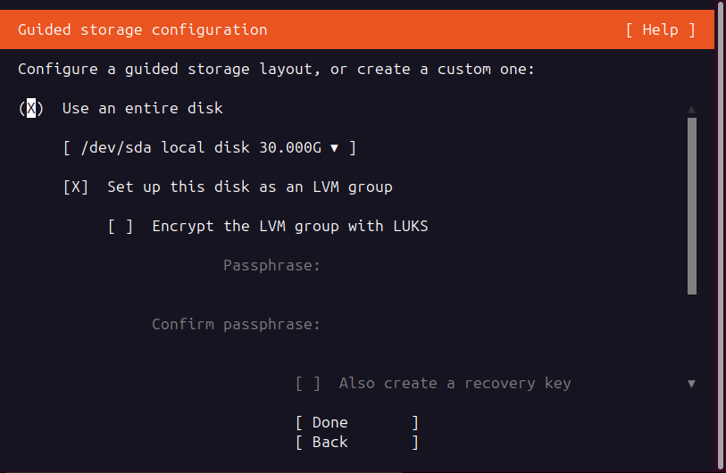
- Выберите Use an entire disk
Стрелками выделите этот вариант и нажмите
Space. Маркер(X)означает автоматическую разметку всего выбранного виртуального диска. - Сверьте устройство и объём
В раскрывающейся строке должен быть
/dev/sda local disk 30.000Gили созданный вами объём. Если размер отличается от VDI, не продолжайте и проверьте «Настроить → Носители». - Примите решение по LVM
[X] Set up this disk as an LVM group— штатный вариант Ubuntu с гибким управлением томами; для курса его можно оставить включённым. Шифрование LUKS не включайте без отдельного задания и сохранённой парольной фразы. - Подтвердите в два этапа
Клавишей
TabвыберитеDoneи нажмитеEnter. На следующей сводке ещё раз проверьте только/dev/sda 30 GB, затем подтвердите запись изменений.
Ubuntu · часовой пояс
Выберите город и проверьте время
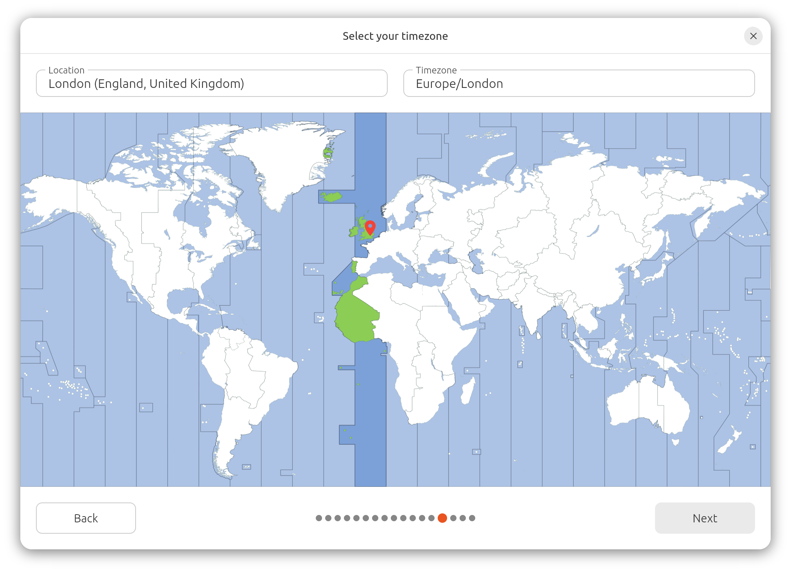
- ДЛЯ МОСКВЫEurope / Moscow.
- ЗАЧЕМ ВАЖНОЛоги, обновления и сертификаты зависят от правильного времени.
- ПОСЛЕ УСТАНОВКИМожно включить автоматическую синхронизацию.
Ubuntu · учётная запись
Создайте пользователя, которого легко проверить
Показывается на экране входа.
ubuntu-lab-01Имя хоста в сети и терминале.
studentЛатиница, строчные буквы, без пробелов.
sudo. Запишите его в безопасном месте; учебный пароль не используйте в реальных сервисах.Контрольная точка 3 · перед записью
Прочитайте сводку и нажмите Install
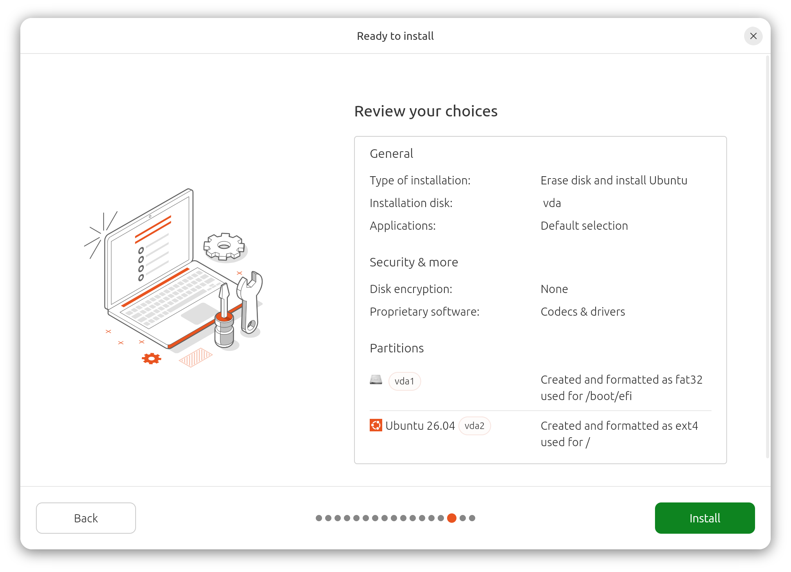
- LANGUAGE / KEYBOARDСоответствуют вашему выбору.
- DISKВиртуальный, около 30 ГБ.
- TIMEZONEEurope/Moscow или ваш регион.
- USERИмя и логин записаны.
Установка · 10–25 минут
Пока копируются файлы, не закрывайте окно VM
Смена слайдов установщика нормальна.
Запись на виртуальный диск должна завершиться.
Проверить индикатор диска внизу окна.
Ubuntu · завершение
Нажмите Restart now
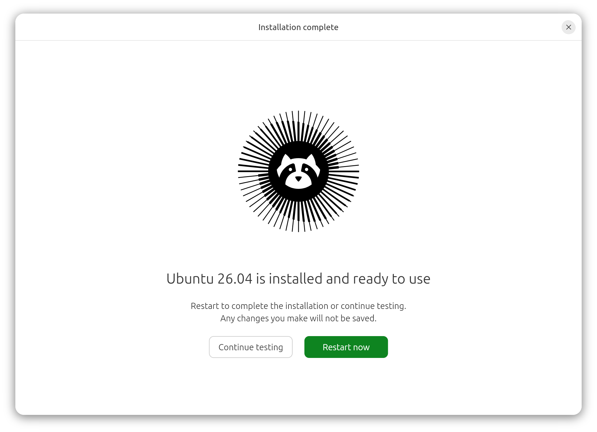
- RESTART NOWVM перезагрузится с виртуального диска.
- REMOVE MEDIUMЕсли появится просьба — отключите ISO или нажмите Enter.
- ЗАЦИКЛИЛСЯ УСТАНОВЩИКSettings → Storage → убрать ISO из Optical Drive.
Первый вход
Введите пароль созданного пользователя
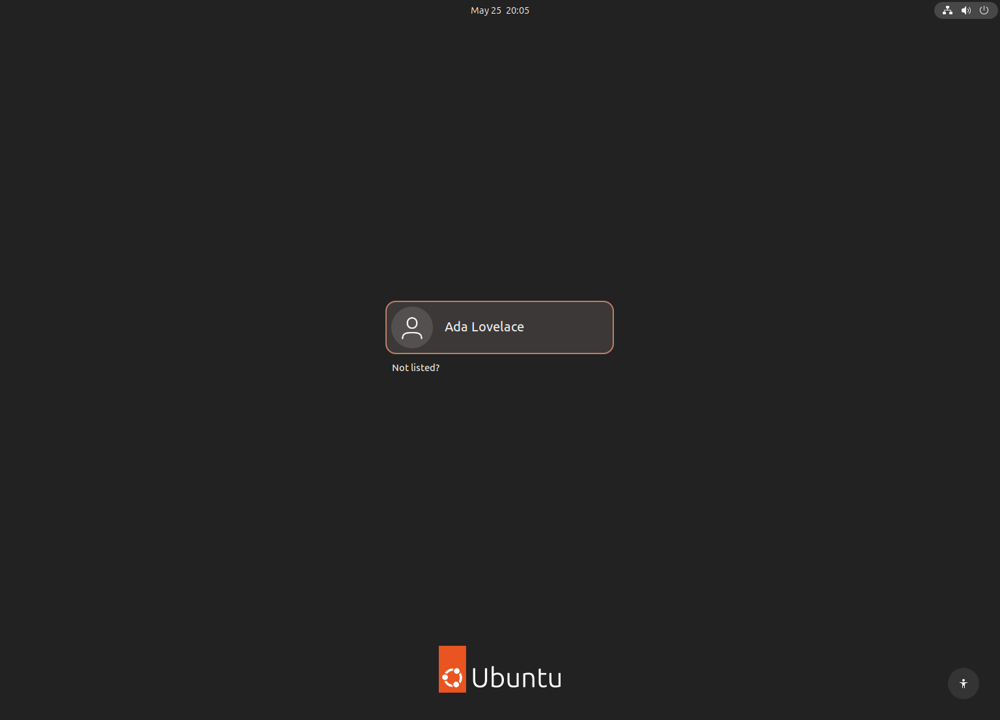
- ПАРОЛЬ НЕ ПОКАЗЫВАЕТСЯЭто нормальное поведение и в терминале.
- ЧЁРНЫЙ ЭКРАН ПОСЛЕ ВХОДАПодождите; первый запуск создаёт профиль.
- ПРИЗНАК УСПЕХАОткрылся рабочий стол и панель приложений.
Шаг 6 · первое обновление
Откройте Terminal и обновите список пакетов
student@ubuntu-lab-01:~$ sudo apt update [sudo] password for student: ... All packages are up to date. student@ubuntu-lab-01:~$ sudo apt upgrade -y
После создания VM · Guest Additions
Где установить дополнения и включить интеграцию
- Сначала завершите установку Ubuntu
Запустите VM, войдите в установленную систему и убедитесь, что рабочий стол работает без зависаний. Guest Additions устанавливаются внутри гостевой ОС, а не в VirtualBox Manager.
- Подключите установочный диск дополнений
Сделайте окно запущенной VM активным. Windows/Linux: откройте меню окна
Devices; macOS: используйте верхнюю системную строку меню. ВыберитеDevices → Insert Guest Additions CD Image. - Запустите установщик внутри Ubuntu
В появившемся диалоге нажмите
Runи введите пароль. Если автозапуск не появился: откройте «Файлы» → дискVBox_GAs→ терминал и выполнитеsudo sh ./VBoxLinuxAdditions.run, затем перезагрузите Ubuntu. - Включите функции после перезагрузки
В окне VM выберите
Devices → Shared Clipboard → Bidirectionalи при необходимостиDrag and Drop → Bidirectional. Автоподстройка экрана:View → Auto-resize Guest Display. - Добавьте общую папку отдельно
Выключите VM →
Настроить → Общие папки → +→ выберите каталог хоста → отметьте «Автоподключение» и «Постоянная». В Ubuntu папка обычно появляется как/media/sf_имя.
Страховочная точка
Создайте снимок clean-install
- Корректно выключите Ubuntu
System menu → Power Off. Состояние VM: Powered Off.
- Откройте Snapshots
В VirtualBox Manager выберите VM → меню рядом с названием → Snapshots.
- Нажмите Take
Имя:
clean-install; описание: дата, Ubuntu, обновления. - Проверьте снимок в дереве
Теперь лабораторные можно откатывать к чистой системе.
Как завершать работу
Три кнопки похожи, последствия разные
| Действие | Что происходит | Когда использовать |
|---|---|---|
| Power Off в Ubuntu | Система корректно закрывает файлы и выключается | Обычное завершение |
| Save the machine state | RAM сохраняется на диск, работа продолжится с того же места | Короткая пауза |
| Send the shutdown signal | VirtualBox просит Ubuntu завершить работу | Если меню гостя недоступно |
| Power off the machine | Аналог выдёргивания питания | Только при полном зависании |
Диагностика · реальный случай
Белое окно установщика: последовательность исправления
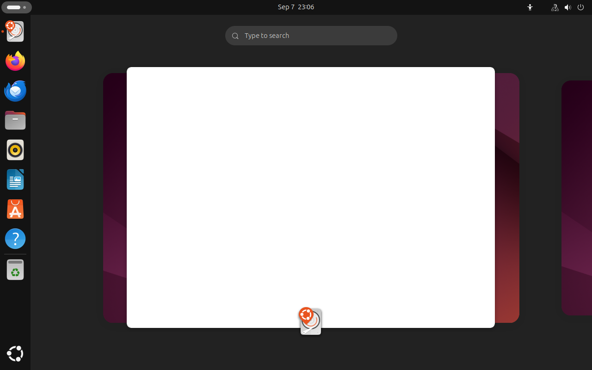
- Отделите сбой установщика от зависания всей VM
Подождите 1–2 минуты и проверьте, реагируют ли панель Ubuntu, курсор и другие приложения. Если работает только белое окно, проблема относится к его отрисовке; если не реагирует весь рабочий стол — проверяйте RAM и CPU по слайду 23.
- Выполните полное выключение
В меню Ubuntu выберите «Завершить работу». Не сохраняйте состояние VM: сохранение вернёт тот же графический сбой при следующем запуске.
- Исправьте параметры дисплея в VirtualBox
Manager →
Ubuntu-lab-01 → Настроить → Дисплей → Экран: контроллерVMSVGA, видеопамять 128 МБ, 3D-ускорение выключено. НажмитеОК. - Проверьте ISO и повторите загрузку
Настроить → Носители: Apple Silicon — ISOarm64, Intel/AMD —amd64. Запустите VM; если доступен пунктUbuntu (safe graphics), выберите его. После открытия установщика продолжайте с обычными параметрами.
Devices → Optical Drives → Remove disk. 3D и Guest Additions возвращайте по одному, каждый раз проверяя перезагрузку.Приёмка · последние 6 минут
Работа выполнена, если есть пять доказательств
- VirtualBox показывает VM в состоянии Powered OffСКРИНШОТ 1
- Ubuntu загружается с виртуального диска без ISOПРОВЕРКА
- Виден рабочий стол и имя пользователяСКРИНШОТ 2
sudo apt updateзавершился без ошибки сетиСКРИНШОТ 3- В дереве снимков есть
clean-installСКРИНШОТ 4
Итог практической работы 1
Вы собрали управляемую учебную среду, а не просто «поставили Ubuntu»
Хост, ISO, RAM, CPU, VDI, NAT и снимок больше не выглядят случайным набором полей.
Архитектура хоста, имя ISO, RAM, CPU, размер диска и имя снимка.